Plataforma inteligente para permanência e êxito estudantil
Educação profissional e tecnológica, com dados, IA e ação preventiva.
01 · Problema
Instituições têm muitos dados, mas agem tarde
Os dados acadêmicos, pedagógicos e socioeconômicos ficam dispersos. Quando a evasão aparece, ela já aconteceu.
Perda de estudantes
Evasão reduz o número de concluintes e compromete os indicadores.
Custos mais altos
Cada estudante que sai representa investimento público perdido.
Indicadores prejudicados
Taxas de conclusão e de eficiência ficam abaixo do esperado.
Menor impacto social
Menos formação entregue à comunidade e menos oportunidades.
02 · Solução
Transformar dados em decisões preventivas
O EduPredict IA junta as fontes da instituição e usa IA e ciência de dados para antecipar riscos e apoiar cada intervenção.
Fontes
Sistemas acadêmicos, ambientes virtuais, dados pedagógicos e socioeconômicos
IA e dados
Modelos preditivos que identificam fatores de risco cedo
Ação
Dashboards, alertas e recomendações de intervenção
Resultado
Maior permanência e êxito estudantil
Como o painel apoia a decisão
Exemplo ilustrativo, sem resultados medidos.
estudantes em risco alto
estudantes em risco médio
estudantes em risco baixo
ações recomendadas
(exemplo ilustrativo)
03 · Modelo de negócio
Como o projeto se sustenta
Clientes
Institutos federais, universidades, escolas técnicas, empresas EdTech, redes de ensino e órgãos públicos.
Canais
Plataforma web em SaaS, integrações com sistemas acadêmicos, parcerias e eventos educacionais.
Receitas
- Assinatura SaaS por instituição
- Licenciamento
- Implantação e treinamento
- Consultoria e análise de dados
Custos
Desenvolvimento e manutenção da plataforma, infraestrutura em nuvem, equipe técnica e científica, suporte e implantação.
04 · Impacto
Impacto em cinco frentes
Social
Mais estudantes permanecendo e concluindo seus cursos.
Educacional
Melhoria da aprendizagem e do desempenho acadêmico.
Tecnológico
Transformação digital da gestão acadêmica.
Econômico
Redução de custos e melhor uso dos recursos públicos.
Institucional
Aumento dos indicadores de qualidade e eficiência.
Escalabilidade
Solução modular, adaptável a diferentes instituições.
05 · Tecnologia
Pipeline de dados até o usuário
Fontes, tratamento, modelos de IA e aplicação, sobre tecnologias abertas e consolidadas.
06 · Estágio do projeto
Onde estamos e o que vem a seguir
Hoje o projeto está em TRL 1–2: concepção, estudos de viabilidade, modelagem da solução e roadmap.
- TRL 1Ideia
- TRL 2Concepção
- TRL 3Prova de conceito
- TRL 4Protótipo inicial
- TRL 5Validação
- TRL 6Demonstração
- TRL 7Operação piloto
- TRL 8Qualificado
- TRL 9Produto consolidado
Próximos passos
- Prova de conceito com dados de instituições parceiras